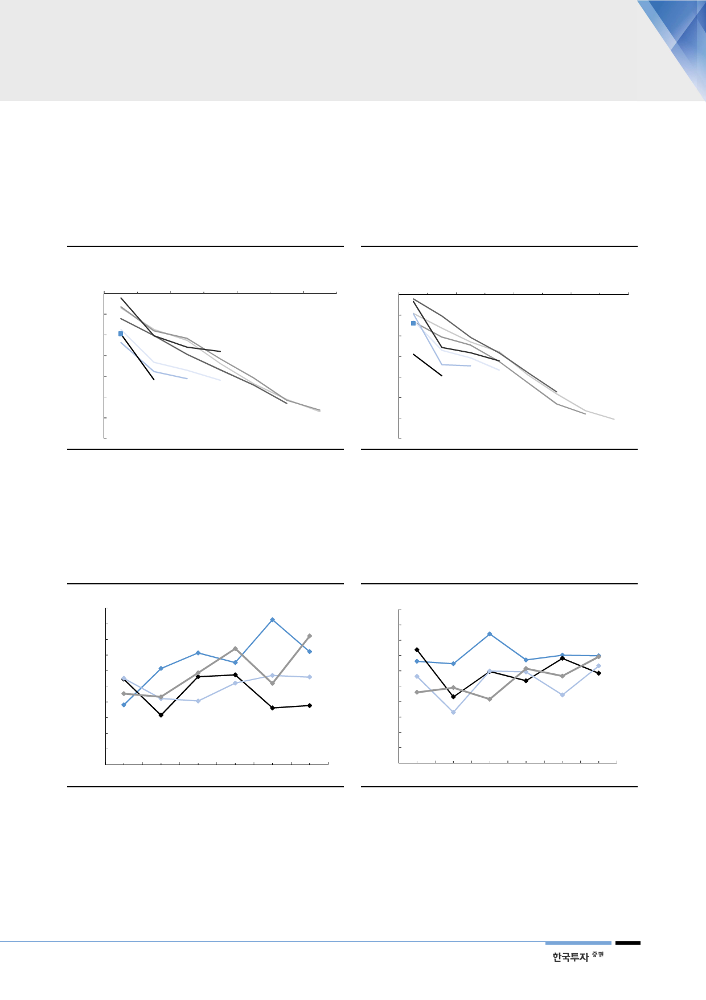

특히 2014년부터 미국 판매
부진이 시작된 이후 중고차
가격 하락 가속화
실제로 현대차의 중고차 가치는 2014년 미국 판매량이 부진한 이후 빠르게 하락
했다. 대표모델인 아반떼(미국명 ‘엘란트라’)와 쏘나타의 연도별 중고차 가격 하
락 추이를 보면 2010~2012년 모델의 하락속도보다 2014년 이후 모델들의 하
락 기울기가 가파름을 알 수 있다.
[그림 25] 현대 아반떼 연식별 중고차 가격 하락속도
(중고차 가격하락률)
1년 2년
경과 경과
0%
3년
경과
4년
경과
5년
경과
(10%)
(20%)
2018
(30%)
2015
(40%)
(50%)
2017 2016 2014
(60%)
(70%)
자료: CarGurus, 한국투자증권
6년
경과
2013
7년
경과
2012
2011
[그림 26] 현대 쏘나타 연식별 중고차 가격 하락속도
(중고차 가격하락률)
1년 2년 3년 4년 5년 6년 7년 8년
경과 경과 경과 경과 경과 경과 경과 경과
0%
(10%)
(20%)
(30%)
(40%)
(50%)
2018
2015
2016
2017
2014
2013
(60%)
(70%)
2012
2011
자료: CarGurus, 한국투자증권
출시 3년 뒤 중고차 가치가
경쟁모델 대비 부진
이는 경쟁모델들과 비교해도 악화가 빠르게 진행됐다. 특히 리스는 대부분 3년으
로 계약하기 때문에 3년 이후의 중고차 가치가 가장 중요하다. 경쟁모델들과의 3
년 후 중고차 가치 하락률을 시계열로 보면 리스 손실 원인을 알 수 있다.
[그림 27] 아반떼 경쟁모델 3년 후 중고차 가치 비교
(중고차 가격하락률)
(50%)
(45%)
(40%)
Elantra
(35%)
(30%)
(25%)
Focus
Corolla
(20%)
(15%)
Civic
(10%)
(5%)
(0%)
2011년형 2012년형 2013년형 2014년형 2015년형 2016년형
자료: CarGurus, 한국투자증권
[그림 28] 쏘나타 경쟁모델 3년 후 중고차 가치 비교
(중고차 가격하락률)
(50%)
(45%)
(40%)
(35%)
(30%)
(25%)
Fusion
Sonata
Camry
Accord
(20%)
(15%)
(10%)
(5%)
(0%)
2011년형2012년형2013년형2014년형2015년형2016년형
자료: CarGurus, 한국투자증권
경쟁모델들은 안정적인
감가상각 추이
리스 시장에서 중형 세단(쏘나타)의 경쟁모델은 포드 Fusion, 도요타 Camry, 혼
다 Accord이며, 준중형 세단(아반떼)의 경쟁모델은 포드 Focus, 도요타 Corolla,
혼다 Civic이 있다. 이들의 연식별 중고차 가치 하락은 상대적으로 완만하다.
13